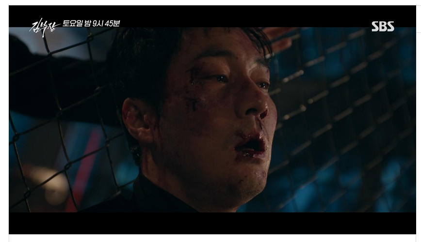

김부장' 마지막회 앞두고 — 소지섭 '융단폭격' 액션과 결말 관전 포인트
SBS 드라마 '김부장' 이 종영을 앞두고 매회 화제를 모으고 있습니다. 특히 종반부로 갈수록 강도가 높아진 액션 시퀀스와, 마지막회를 향한 결말 전망에 시청자들의 관심이 집중되고 있는데요. 스포일러는 최소화하면서 지금까지의 관전 포인트를 정리했습니다.
종반 화제의 중심 — '융단폭격 액션'
'김부장'의 종반부를 뜨겁게 달군 건 단연 액션입니다. 소지섭·최대훈·윤경호 세 배우가 함께한 이른바 '융단 폭격 액션', '사생결단 액션'이 잇따라 그려지며 "시원하다"는 반응이 이어졌습니다. 로프를 활용한 장면부터 맨몸 주먹 대결까지, 적진 한복판에서 벌이는 '최후의 일격'이 극의 긴장감을 끌어올렸습니다.
평범한 회사원의 얼굴 뒤에 숨겨진 전직 요원의 실력이 폭발하는 장면들은, 이 작품이 왜 '액션 드라마'로 불리는지를 확실히 보여줬습니다.

소지섭의 정체 — '부장님'의 두 얼굴
극 중 소지섭이 연기하는 인물은 겉으로는 평범한 '부장님'이지만, 실제로는 전직 요원·킬러에 가까운 과거를 지닌 캐릭터입니다. 회사와 가정이라는 일상적 공간과, 그 이면의 첩보·액션이 교차하면서 캐릭터의 입체감이 살아났습니다. '회사원의 탈을 쓴 실력자'라는 설정은 소지섭 특유의 절제된 카리스마와 잘 맞아떨어졌다는 평가가 나옵니다.
팽팽한 라이벌 구도
종반의 긴장감을 더한 또 다른 축은 소지섭과 주상욱의 대치입니다. "면담이 덜 끝난 것 같다"는 대사로 상징되는 두 인물의 신경전은, 단순한 선악 구도를 넘어 서로의 목적이 얽힌 팽팽한 대결로 그려졌습니다. 이 대립이 마지막회에서 어떻게 매듭지어질지가 핵심 관전 포인트입니다.
마지막회 방송시간 변경 · 결말 전망
'김부장'은 마지막회 방송시간이 변경된 것으로 안내됐습니다. 본방 사수를 계획 중이라면 편성 시간을 미리 확인하는 게 좋습니다. 결말에 대해서는 주인공이 굴레에서 벗어나 '자유인'으로 향하는 해피엔딩 가능성이 거론되고 있으나, 구체적 전개는 방송으로 확인해야 합니다. (반전 가능성도 함께 예고된 만큼 섣부른 예측은 금물입니다.)
신예 배우들의 데뷔 소감
작품을 통해 첫 데뷔를 치른 신예 배우들의 소감도 화제입니다. 주상욱의 극 중 딸을 연기한 배우 유지안은 "떨렸지만 행복했던 데뷔", "소중한 데뷔작"이라는 소감을 전하며, 화제작에 이름을 올린 기쁨을 드러냈습니다. 베테랑 배우들의 열연 속에서 신예들이 존재감을 보탠 점도 이 드라마의 관전 요소입니다.
정리
종영을 앞둔 '김부장'의 관전 포인트는 ① 소지섭·최대훈·윤경호의 강도 높은 액션, ② '부장님'의 숨겨진 정체, ③ 소지섭·주상욱 라이벌 구도, ④ 마지막회 방송시간 변경과 결말 전망입니다. 마지막까지 긴장의 끈을 놓지 않는 전개가 이어지고 있습니다.
함께 보면 좋은 글: '김부장' 21% 돌풍에 14년 전 소지섭 영화 '회사원'까지 역주행
참고 자료 (2026.7.24 보도)
- '김부장' 소지섭·최대훈·윤경호, 융단 폭격 액션 — 스포츠경향·조이뉴스24
- '김부장' 마지막회 방송시간 변경, 해피엔딩 결말? — 국제뉴스
- '김부장' 신예 배우 데뷔 소감 — 네이트